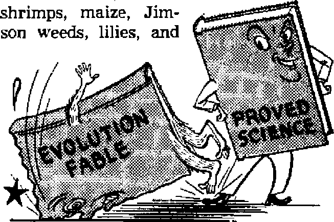

Incredible energy for military and industrial use!
Collision with fact strips myth of its glory
Chief purifier and regulator of body liquids
Are modern Catholic martyrs champions
■Bwft of truth or plotters of intrigue?
DECEMBER 8, 1951 semimonthly
THE MISSION OF THIS JOURNAL
News sources that are able to keep you awake to the vital Issues of cur times muat.be unfettered by censorship and selfish interests. “Awake r* has no fetters. It recognizes facts* faces facts* is free to publish facts. It is npt bound by political ambitions or obligations; it is unhampered by advertisers whose toes must not be trodden on; it is unprejudiced by traditional creeds. This journal keeps itself free that it may speak freely to you. But it does not abuse its freedom. It maintains integrity to truth.
“Awake 1” uses the regular news channels* but is not dependent on them. Its own correspondents are on all continents, in scores of nations. From the four corners of the earth their uncensored, on*the-scenes reports come to you through these columns. This journal’s viewpoint is not narrow, but is international It is read in many nations, in many languages, by persons of all ages. Through its pages many fields of knowledge pass in review—government, commerce, religion, history, geography, science, social conditions, natural wonders—why, its cover* age Is as broad as the earth and as high as the heavens.
“Awake I” pledges itself io righteous principles, to exposing hidden foes and subtle dangers, to championing freedom for all, to comforting mourners and strengthening those disheartened by the failures of a delinquent world, reflecting sure hope for the establishment of a right* eous New World.
Get acquainted with “Awake!” Keep awake by reading “Awake 1”
Published Semimonthly By watchtower bible AND TRACT SOCIETY, INC. 117 Adams Street
N. H. Knorr, President
Printlnfl thia Issue: 975,000
LaaiMfv In wklcfc thh ii pablhhrf:
Snlmtnthly—Afrikaans, EniMsfa, Finnish, Gtrmmi, NurwAglu, Bpanlkb, Monthly—Danish, French, Greek, Poctyjuese, Swedish, Ukrainian.
Officer Yearly subtcrlptiDo Rate
Aawlai, U.S,, 117 Adams 3t, Brooklyn 1, N.Y fl AMtrftlta, 11 Beresford Ed., Strathfleld. N.S.W. 8s Canada. 40 ln»ln An., Toronto 6t Ontario *L Eb|Iul 34 Crittn Terrace, Lcodqn, W, 2 7a Saath Africa, 623 Boston House, cape Town 7i
stored ■£ noud-dan tnaiUr at RrocJtlyn, N. Y
Brooklyn 1, N. ¥„ U, 8. A, Grant Suiter, Secretary
Five cents « copy
■imlttuiBf should be sent to office In your country In compliance with resuIiUotia to fuarsntee we delivery of money, Bemittaneee are accepted at Brooklyn from countries where no office 1b located, by foterpatlaaak money order only, EhibfcripiJon rate* in different cmmtriM art here listed In local currency, Notiee of txpIritlM (with renewal blank} la not at least two issues before sitHcriptfon er-pine. ChanH ef u<r«t when sent to our office mv be expected effeetltc within one nwntb. Bend your old ai veil ai hew address.
Act rf Martfa 3, 1879. Mu lai in U. 8. A.
CONTENTS
Clergy's Kingdom Part of This World 3 Atomic Power—Incredible Energy for
The Chao Phya River
New Zealand Re-elects Its Nationalist Government
Science Trips the Evolution Fable
The Unbridged Gaps Between Kinds 20
Heredity—by Evolution or Creation?
“Your Word Is Truth"
Maimer of the Bible's Inspiration
Youth Sacrificed on a Modem Altar
£/ “Now it is high time to awake."—Romans 13:11 $
Volume XXXII
Brooklyn, N. Y,, December 8, 19S1
Number 23
Clergy’s Kingdom Part of This World
Are modern Catholic “martyrs" champions of truth or plotters of Intrigue?
HE Roman Catholic Church is having more troubles behind the “iron curtain”. On June 29, 1951, in Budapest, Archbishop Josef Groesz was sentenced to fifteen years in prison for plotting to overthrow the communist government of Hungary.
That a professed Christian should be in court should not alone be shocking. Was not Jesus Christ, the gr$at founder of Christianity, railroaded through a mock trial in a “packed court” at the climax of his stay on earth? Did he not foretell for his true followers a constant state of alienation with the old world?—John 15:18-21; 2 Corinthians 4:4; James 4:4.
But when Jesus’ case is examined, any favorable comparison with papal Rome bogs down. Press reports direct from Budapest described the archbishop, under questioning, as “calm and speaking quietly and distinctly”, as he “confessed in detail to charges in a 12-page indictment”. Specifically, Groesz, successor of Josef Cardinal Mindszenty, sentenced to life imprisonment on similar charges by the Hungarian government in 1949, admitted that he had planned in detail a new royalist regime to succeed the present communist government upon its successful overthrow. Said the United Press report: “Groesz said he had been prepared to take over as chief of state of Hungary if the Communist regime were overthrown, in the absence of Archduke ptto.” A note of surprise was added on the closing day pf the trial with news that, in addition to Archbishop Groesz and his associates on trial with him, six other members of the Hungarian episcopate had been implicated in conspiracy against the government. One of these, Bishop Endre Hamvas of Csand, admitted guilt in return for being released from trial. He gave his promise to become a “fully loyal citizen and abstain from any political activity”. Two monks in the group on trial with Groesz readily accepted their imprisonment and refused to appeal. Reports commented that all had “confessed fluently on the witness stand”. Ferenc Vecer, a Paul-ist monk, confessed to the slaying of a Russian soldier and the organizing of a band of peasants who killed thirty more.
To the actions of the Hungarian government, Vatican retort was quick and fierce. AH Catholic parties instrumental in any way in the trying and convicting of the archbishop and his associates were summarily excommunicated. Groesz’ treatment was termed “sacrilegious”. The Vatican newspaper, LJOsservatore Romano, called the trial result a “flagrantly unjust verdict” and a “cold-blooded crime”.
But, despite the Vatican’s formal protest, little of the sentimental gush that two years earlier accompanied the Mind-szenty trial was evident. In the former case it will be recalled how Rome’s propaganda drive dramatically charged that the cardinal's confession had been obtained through use oPdrugs. Such claims along with wordy repetitions of “mock trial”, “travesty of justice,” etc., constituted virtually the entire Vatican case. After sober reflection, thinking persons saw through such flimsy pretext Mindszenty’s confession was buttressed with documentary evidence of his guilt found on his premises.
Furthermore, it was disclosed that had she wished, Rome could likely have recalled the cardinal before the trial, and the communist government would have offered no argument provided he did not return to the country. Regarding the similar Case of Yugoslavia’s Archbishop Stepi-nac, the New York Times, as late as July 5, 1951, reported that Tito’s government was willing to release the imprisoned prelate if Rome would immediately recall him. But Rome continues to reject such offers. She claims this is because that would provide an admission of guilt. Yet her prelates, seemingly provide all the admissions needed at the time of trial Is this the real reason? Of course, had these men been jerked out of the crucible before the worst heat was turned on, their names might not have provided such glittering subjects for the naming of new schools, etc. Could this fact have anything to do with it?
Responsible sources at length debunked the dope claim in the Mindszenty case, and this time it was decidedly soft-pedaled. Finally, on July 5, the New York Times reported that the hierarchy of Hungarian bishops formally condemned the course taken by Groesz and tacitly admitted the charges against him were true.
We must weigh the merits of these “communist victims” against the measure of Jesus’ standard for Christian persecution. As with Cardinal Mindszenty, no charges respecting the defendants’ religious worship were voiced. Freely and “fluently” they confessed, not to the missionary activities of Christians, but to the conspiracies of common political meddlers-Further incriminating these men is the historical fact that for as long as they have existed Catholic clerics have been notorious for just such intrigue. To take just a few modern examples, recall their open machinations in Mussolini's Italy, Hitler’s Germany, Petain’s France, Franco’s Spain; think of her current political war with communism in Italy and of her “church states” in Latin America. -
Though falsely charged, did Jesus confess to any political conspiracy? No, for he had stayed clear of politics. To Pilate he said in unmistakably clear language: “My kingdom is no part of this world. If my kingdom were part of this world, my attendants would have fought that I should not be delivered up to the Jews. But, as it is, my kingdom is not from this source.” —John IS:36, New World Trans.
If behind only a mask of Christianity the clergy conspire against worldly governments, they must expect the natural harvest of such hypocrisy. God’s Word, by which they claim to be guided, warns them: “But let none of you suffer as a murderer, or a thief, or a railer, or a coveter of other men’s things.”—1 Peter 4:15, Catholic Douay Ver.
Clergy meddlers prove that their “kingdom” is part of this world. Their hopes are in the world. They conspire with the world. They involve themselves in intrigue. If caught they must suffer the consequences. Certainly no Bible standard can save them. The harsh and totalitarian nature of the government they worked against in no way lessens the wrongfulness of their course. They have taken the sword. Thus the Bible rules they must perish by it.—Matthew 26:52.
the- payoff when the prmfe*® of atonifc power begin showing wk dence of fuJ.fl.Ilm ent.
To. understand the incredible ener* gy involved, merely recall that the heat that: diwived Hiroshima and Nagasaki six years ago was released in one-millionth of a second. When this is slowed down the enormow power of the atom becomes available to'drive turbines, wheels and pro pelters. One pound of fissioning U-235 releases hekt equal to that of nwra than 2,000,000 pound® of coal or
IneredMe Energy for Military anti Industrial Use!
Q T.AHTL1NG developments, with stupen-Odous po&sMite have recently been mmounced! Promises of atomic*powered submarines?, planes and industries, of a, few pounds of fuel lasting indefinitely, of planes that could circle die earth without landing and submarines that could travel undetected beneath enemy waters without surfacing, of war weapons more -devastating than ever before; all are now possible and some are already being built.
Perhaps this recalls the promises heard some time ago of uranium pills to run cars and home heaters, of atomic furnaces to melt the Greenland icecap and snake a garden out of Alaska.. Tho$e. promised were nonseme, but: the submarine, airplane and weapons are drawing rapidly nearer.
There is much speculation con* earning them, and sometimes it is contradictory, because, due to military security, news of atomic (tevetopments is often confused and vague. Yet startling- development, formerly hidden, have now been revealed. The signing of contracts for a. nuclear-powered submarine and an- atomic
360,000 gallons of gasoline. On. the basis of the enei*gy released by the bombs dropped on Japan, 6 tons, 12,000 pounds of matter, would ..produce 150,000,000,000 kilowatt hours, the power needs of the United States for a. year!'
A FantaOc Ftete/wo Cr«O
It has long been obvious that the sub* marine would probably be the first craft propelled by atomic* power. This is because the government hold®, the atomic' know* how; because ■ the high cost of atomic ex* periments b no obstacle to military lead*-ers-f. and because the submarine probably above all other craft, can put the atom's tro mendous power to the'greatest u&e, Also, the surroundiing water provider a natural shield, against, radiations. Such a submarine would have almost unlimited range, fmv tastic power and speed—perhaps twice the speed of ordinary subs—and be better equipped for its clandestine excursions into enemy waters to strike, dragonlike, from below the seas.
One method M olfrtahihi# p^wer from atuiniic ^0*
:Heat frw. pile can 1:x> by a hat ftui.d to a
heat exchanger where it producer steam to drive a W* bines,, which turns a generator that produces power ter (dec trie ■ motors
Back in 1947 Admiral Chester Nimitz, chief of naval operations, said an atomic submarine would be "militarily desirable’*. By 1950 the Atomic Energy Commission admitted it was working on models of ship propulsion reactors (the heat-producing unit of an atomic engine), and a recent estimate was that the nuclear-powered submarine would be completed late in 1953 □r early 1954, but Look (September 11) predicted it would be six to eight years before the first one actually sees service
in its controlled atomic reactor the fissionable material will simmer slowly and develop tremendous heat, which can be converted into steam to drive the sub. Just how this will be done is a military secret, but the atomic "fires” (though there is no flame, tremendous heat is involved) will probably heat a molten metal that will flow into a heat exchanger to produce steam that could turn a conventional turbine to propel the boat.
A different theory was proposed by the New York Times (August 23), which said, "It has been estimated that such a craft might have a surface speed of sixty-five miles an hour--.. screws are no more efficient at sixty-five miles per hour than are airplane propellers at six hundred.” It then offered the suggestion that the sub might be propelled by water drawn directly into its atomic reactor, heated tremendously and exploded, jet fashion out the rear. Thus the "nuclear heat [would be] converted directly into jet driving force without going through the ‘heat cycle' used in all other engines”. This water, the Times proposed, might also serve as a radiation shield for the submarine and help dissipate dangerous radiation into the sea.
The main problem is not in “controlling” the atomic energy. This is comparatively simple. The nuclear reactor is easy to operate, but difficult to build; hence the big problem is in the engine’s design and construction.
Any information concerning its design or method of operation must obviously be mere speculation, but it can be based on known principles, Hence the comments of authorities can be only "intelligent guesses”, for, outside the project, no one actually knows how the sub will be powered, and obviously the navy is not expected to tell. It has, however, indicated in its publication All Hands (October 12) that definite choice had not yet been made between two types of reactors that could be used to power the sub.
The Sub's Advantages
The military advantages of such an atomic denizen of the deep are obvious. The atomic engine needs no oxygen, and such an engine has been the submariner's dream. With it a sub should be able to travel submerged for prolonged periods at fantastic speeds;
According to Popular Mechanics (May, 1951) Vice-Admiral Charles Lockwood said that America’s atomic submarine will "outrun, outfight and Gutmaneuver any underwater or surface craft in the world. She’ll have four times the horse-power of her most powerful diesel sisters. , , . Her range will be globe-girdling.... Her super-streamlined hull, designed primarily for underwater cruising, will make her faster when submerged than when operating on the surface—an unheard of thing in modern subs. She is expected to cruise down there at 25 to 30 knots”. This article says that air for the crew can be banked at three- to four-day intervals by a small, inconspicuous, retractable snorkel (an air intake for submerged subs) and that the
“atomic engine is expected to run so quietly that enemy electronic ears will not, in most cases, be able to hear her. Even if they do”, it said, “her fantastic underwater speed will carry her safely out of danger before an enemy ship could turn around.” Further concerning the speed of the “gigantic” atomic submarine, the October 12 All Hands said it would reach 35 knots underwater, a fantastic speed, as yet untested new submarines are not expected to exceed 25 knots.
The range and cruising radius of such a boat would be limited only by the crew’s stamina. This publication said a “single charge” of uranium would propel the craft “tens of thousands of miles”. Of its incredible possibilities, Life (September 3) said, “A sub that never had to surface could travel under ice through the northern routes of the Barents sea to Murmansk or through the Dardanelles into the Black sea.” Does that sound fantastic? Then remember, atomic power w fantastic!
Nuclear-powered Aircraft
Work on the sub is an intermediate step to atomic flight. Last March 23 the Air Force and Atomic Energy Commission announced that authorization had been given for negotiation of a contract “for the further development of a nuclear reactor for aircraft”. Contracts have now been awarded for both the plane and its engine.
This atomic monster, which may dwarf even the huge B-36 bomber, is not expected to be flight-tested before 1955 or 1956, Meanwhile many design problems will be faced. For example, present planes use up a good part of their fuel In flight, and are built to land with much of their weight gone, but this will not be the case with an atomic plane which will use up none of its weight before landing. Also, pilots rely on quick power response when they overshoot a field and must regain altitude quickly, and the atomic plane’s response in such a circumstance may be slower. Another factor that must be considered is the danger of radiation from a smashed engine if a crash occurs m a thickly settled section.
Much speculation about its appearance has been made. David A. Anderton predicted in Aviation Week (June 11) that the “first nuclear-energy-powered aircraft m all likelihood will be a huge flying boat”, which would not be concerned about runway lengths and could be tested in isolated areas. The Los Angeles Examiner (February 23) suggested a flying wing as a possible atomic plane design. But no one aside from the men who are working on it knows how it will look, and even the experts’ guesses may be far wrong.
The engines for the atomic plane and submarine will no doubt be similar. Several principles are known that might be used in the plane. The reactor's heat could develop steam to drive the propellers, but such a plane would, of course, be limited to the speed of any other propellered craft. If the first or later models are supersonic, turbojets might be used; with the jet’s power being provided by the reactor’s heat. The May issue of Popular Mechanics went so far as to suggest the possibility of a ramjet, with the air going right through the reactor to be heated, expanded and exploded violently out the rear.
Whatever method is used, the plane’s practically unlimited power should enable it to strike any point on earth and return to any other point without refueling. It should ride out any length of bad-weather traffic over an airport, and never be subject to power failure on a landing or takeoff. Scientists have suggested that a single pound of Uranium-235, the material used in atomic bombs, has enough energy to drive a giant B-36 bomber 80 times around the globe.
For General Power?
Another field in which atomic energy is causing much discussion is that of the power companies that generate electricity for general use. Its cost will probably be prohibitive for many years to come. However, some engineers believe it may prove an important source of power within twenty years, if only in regions that have no cheap coal, oil or water power. Before this can be done, the amount of fissionable material, which is not great, will have to be vastly increased. Otherwise the atomic age will never live up to its advance claims.
Some background information will enable you to understand this. Take a pound of uranium. It is 40 per cent heavier than lead, so a pound is not large, but smaller, in fact, than a penny matchbox. It is difficult to mine and refine, so this pound costs about $50. However, it cannot produce power. In it is a mixture of atoms of two different weights. For each U-235 atom (the one needed for power) there are 140 of U-238. Gigantic plants like the one at Oak Ridge must be used to separate the U-235 from U-238. Even after they are separated, if we get a full pound of U-235, it still would not fire a reactor. It will not react until a larger amount is present, and when that quantity is present it. reacts automatically. (Incidentally, that is why “uranium pills” cannot run cars and home heaters.)
Tests are under way at Arco, Idaho, to find a way to create new nuclear fuel faster than it is consumed, and these tests may contribute greatly to the development of atomic power. The Arco experiment will attempt to “breed” more and more atomic fuels. Scientists have known that when U-238 (the non-fissionable or unusable part of uranium) was put in a reactor with U-235 and bombarded, it changed into plutonium, which does fission, and hence can be used. They have likewise discovered that another substance, thorium, does the same thing, and it is vastly more plentiful than uranium. They believe U-235 will make twice its weight in both these other products, and that they will then fnake more of themselves. If the Arco work, appropriately labeled "operation bootstrap”, succeeds, then atomic development will have received a tremendous boost.
Atomic Evils to End
Present development, however, is not particularly concerned with peacetime uses. It is on a wartime basis. The atomic sub, plane and bomb are designed for destructive use. Tests in Nevada indicate atomic weapons for use against combat troops in the field have probably been developed. President Truman’s request for $5,000,000,000 more for the hydrogen bomb gives strong evidence it will be built. Senator McMahon, head of the Joint Congres; sional Committee on Atomic Energy, said (September 18) that destruction equaling all that was caused “in the rain of bombs that fell upon Germany across the six-year span of World War H” could now be accomplished by the United States in a single day. He asked for mass production of bombs “at less than the cost of a single tank”, and said, “There is virtually no limit . . . upon the number of atomic bombs which the United States can manufacture.”
Man continues to turn his constructive instruments to destructive purposes. Yet with all of his new-found wisdom, no scientist will ever be able to disprove the fact that Jehovah God created the awe-inspiring power within the tiny atom. He is a God of power, and can easily muster what he needs to permanently abolish man’s evil deeds. Then, in peace, the instruments of war will be replaced once and for all with instruments having constructive uses. Read it in your own Bible at Micah 4:3, 4.
BEAUTY
IS ONLY SKIN DEEP
influence their lives, they have been affected. There can be no deny-
PHRASED according to the Biblical proverb, our title would read, “Grace is deceitful, and beauty is vain?’ (Proverbs 31:30, Am. Stan. Ver.) All must be aware of the modem trend toward the overemphasis on physical charm. No, there is nothing wrong with beauty itself. Look abroad at the physical glories of the splendid earth. Evidently its Creator did not purpose that the globe’s human caretakers should move about amid such beauty, themselves ashen-faced and garbed in black. The Bible does not condemn the “beautiful and well-favoured” Rachel, nor David for his “beautiful countenance”. (Genesis 29:17; 1 Samuel 16:12) Only the Devil’s purpose can be served by purposely mutilating the body or tattooing the skin. —Leviticus 19:28.
But with some persons decking the outward skin with surface charm has reached the point where little else matters. But this can no more preserve an individual from corruption than can material possessions do so for nations. Though the United States i& the most favored land on earth materially, her former president, Herbert Hoover, on August 30, 1951, lamented for the future as he lashed bitterly at “a cancerous growth of intellectual dishonesty in public life which is mostly beyond the law”.
A nation is only a collection of individuals. And the way in which the citizens individually fill their minds and occupy their time will affect the great mental register of the whole country. Women have been hardest hit by the growth of the “beauty cult”. But neither have the men been immune, If only to the extent that women
■ing the mutual sex attraction that makes male and female interdependent. In the beginning, was not woman brought into existence for the very purpose of complementing the man and serving as his able helpmate? Would the influence be for good or for evil? Adam caved in to sex attraction and was drowned by Eve’s beauty and charm to the extent that all other vision, even of his Creator, was blotted out Such unwise choice of values has marked history from then till now, always with disastrous effects.
Hollyicood “Touches Up” Delilah
What of Samson and Delilah? How craftily the Devil there used the surface charm of an inwardly rotten woman to trap the integrity of one of God’s servants! Though mighty Samson recovered and repented, he paid bitterly for his folly.
Of course, a modem world, strong for entertainment and weak in Bible knowledge, may be unaware of any but the movie version of the above drama. And since Hollywood is a chief patron of the beauty cult, producers of the film “Samson and Delilah” could hardly bear to let the charming celluloid Delilah wilt away to a cheap sorceress. Hasty adaptations and the famed “Hollywood touch” saved the day and swung her over at the last moment, making her an indispensable contrlb-utor to Samson’s final victory over the heathen Philistines, Not content with warping Samson’s life to where he would have difficulty in recognizing it iiimself, they are currently doing the same thing for King David in the highly touted '’David and Bathsheba”.
Thus are lives and action, the record of which is divinely inspired and preserved for learning in today’s critical times, distorted when fed to a mentally and spiritually impoverished twentieth-century public, The high priests of the "charm sect” must first subordinate everything of true value to sensual beauties and sex appeal, before they minister it to their flocks. Bemoaning the ever-growing tide of public adulation of celebrities, a reader wrote to Time magazine: “perhaps if democracy could find some way to glamorize its better elements, the people wouldn’t fall for so much that is trivial.”
A Look magazine report from Argentina says: "You learn it takes a beauty parlor to make the average American woman presentable, a can opener to get her through the preparation of a meal/' No; America still has a few good cooks. But if the popular trend toward the trivial were followed to the end, little if any time would be left for practical use of the country’s great resources.
To be sure, care for one’s natural features in a tasty and artful manner can work no harm. And discreet use of such artificial aids as cosmetics does not infer that the user has swallowed all the spouting of fantastic adsf such as th£ single package of assorted perfumes that promised to make their user a 'minx, magnet, table-hopper, town trotter, clinging vine, hanky-dropper, flirt, puzzle, fabulous, one dripping jewels, unforgettable, frail, feminine and still a deep, dark secret’. Furthermore, especially since women ate probably judged on observation much more than men, it is only sensible for them to care for the visible evidence. This they can do simply through ordinary cleanliness, selection of clothes, not necessarily expensive, that suit them, and care for small details in appearance, like the arrangement of their hair, their poise in walking, standing, sitting, or just their choice of words and tone of voice.
A "Rogues’ Gallery" of Beauties
But when all such exterior beauty and grace are attained, what then? A girl may be graceful and beautiful in form and attire. Yet she may be completely devoid of all the finer things of life that have to do with her mental attitude and matters of personality and godly devotion and integrity. ’
A man may be gifted with fine features and a glib tongue. He may dress impeccably. Yet these things do not save him from shallow failure if he is vain, irresponsible and lacking in principle. He may be "all talk” or harsh and cruel or selfish and ruthless. Or he may supinely flatter women with meaningless phrase that encourages their wrong use of feminine charm and poise. Or, on the other extreme, he may be a “bruiser”, uncouth to fellow males and wholly lacking in gentlemanly respect for womankind. Whether in male or female, physical beauty and external refinement can cause persons to be high-minded, proud, self-centered, ill-tempered and ungodly in their thoughts and actions.
Do not say that this is being too imaginative. Consider some true case histories from a ''rogues’ gallery” of beauties. Satan the Devil, recall, was, at the time of his creation, glorious to behold and "perfect in beauty”. But a heart of pride overtook him, corrupting his beauty and brightness. (Ezekiel 28:11-17) Vashti, queenly wife of Ahasuerus, king of the Medo-Persian empire, was outwardly beautiful, "fair to look on"; but her disposition was so stubbornly selfish that she lost her royal estate to another that was “better than she*’. (Esther 1:10-12,19) “In all Israel there was none to be so much praised as Absalom for his beauty: from the sole of his foot even to the crown of his head there was no blemish in him." Vet inside, in his heart and mind, Absalom was rotten to the core with jealousy, hatred and rebellion. (2 Samuel 14:25) Jesus denounced the hypocritical religious leaders of his day because they “outwardly indeed appear beautiful but inside are full of dead men’s bones and of every kind of uncleanness". They were like pretty flowerdecorated caskets that held within them decomposing corpses. Yes, indeed, an outward show of grace and beauty can certainly be deceiving and vain.—Matthew 23:27,28, New World Trans,
What* Then, Is Better than Beauty?
So the prominent ones of society in Jesus’ day proved false guides to those who wished to cultivate the truly sound values in life. And what do you think is the case today with those who would paint such a self-righteous surface over exposures of immorality and political corruption? What did former President Hoover have in mind but the cheapest criminal chicanery irrthe highest public offices?
What is better than physical beauty? You can find out from the Bible, the source so often rejected by the haughty fair ones of this world. The Bible proverb opening this article adds: “But a woman thatfeareth Jehovah, she shall be praised." (Proverbs 31:30, Am. Stan. Ver.) The one chosen as “better" than Vashti was Esther. She too “was fair and beautiful" and “obtained favour in the sight of all them that looked upon her". But, in addition, she was completely unselfish, tender and full of compassionate love, and wholly devoted to the pure worship of Jehovah God, whom she reverently feared. Such fear gave her wisdom and understanding that was worth far more than gold or silver, more enduring than her fading fleshly beauty, winning for hgr the admiration of her associates and, what is more, the approval of the Giver of everlasting life.—Esther 2:7,15; Psalm 111:10; Proverbs 3:13-18.
Very soon the outward skin of thin deceit and vanity clothing the present wicked “system of things” will be shredded completely away in the great universal crime probe Jehovah God is now bringing to a climax revealing nothing of the old world worthy of continuance. Only the abiding qualities of true godliness will survive the searching test (2 Peter 3:8-13) Everyone can well afford to take stock of his own worthiness. Though a man has the comeliness of David, let him beware of the treachery of Absalom. Ladies, if you are as dazzling in beauty as Queen Esther, see to it that you are not hollow shells of vanity. Fill your minds and hearts with the same meekness, loving devotion and godly fear that saturated beloved Esther. With old-world standards perishing, all with hopes of life in the new world will be anxious to display its righteous standards now, keeping their minds on ‘whatever things are of serious concern, righteous, chaste, lovable, well spoken of, virtuous and praiseworthy1. (Philippians 4:8, New World Trans.) Thus adorned, whatever your physical grace and beauty now, in the new world you win be blessed with life eternal!
Elsa is a 14-year-old miss who lives in Ecuador, and the only one in her family who is one of Jehovah's witnesses. A lady friend of hers has tried hard to get Elsa to go back to the church and make her first communion, but without success. One day, on her way home from a Bible study, Elsa and three children (whose mother also has a Bible study in her home) were playing in the park. The lady friend encountered them and asked Elsa if she wouldn't go with her to visit the bishop, as he lived just across the street from the park. Elsa, not being afraid of the bishop, consented to go. When they arrived the bishop's assistant met them at the door and the lady advised him that this was the young lady about whom they had spoken. They went in.
“What is your faith?’’ he asked Elsa. "I am one of Jehovah’s witnesses,” Elsa replied. “Who is Jehovah?” “Why, the name of Almighty God.” “Oh, no, the name of God is Joel—not Jehovah.” Elsa opened her Bible, which she had carried with her to the Bible study, and showed him Psalm 83:18. “Oh, that is according to your Protestant Bible and not the true Catholic Bible?' Elsa told him that there was no difference in the Bibles, they all showed God’s name to be Jehovah. “The only difference is that mine cost $12.00 (60 cents, U.S. currency) and yours $100.00.”
They talked about infierno and the soul, and Elsa explained that hell was a “place of rest in hope”, merely the grave. He asked her, “What about the text 'depart from me ye cursed, into everlasting fire prepared for the Devil and his angels?' ” Elsa replied that the fire was symbolical. “Then where do the wicked go?” “To the same place, to the grave, or hell.” “But what about the soul?” she was asked. Elsa quoted Genesis 2: 7, “And the Lord God formed man of the dust of the ground, and breathed into his nostrils the breath of life; and man became a living soul.” “No,” said the priest, “the soul of the good goes .to heaven and of the bad to hell.” Elsa asked him if he had ever seen a soul leave the body, she never had. “Then everybody dies just like the animals?” “Yes—the difference being that Christ died for the men and not for the animals.”
At this the assistant bishop took Elsa and the others into the office of the bishop himself, and related the conversation he had had with this “incorrigible” person, “Oh, you are condemned. You are lost!” the bishop told her. "But if you will confess and bow down before me, I will pardon you.” He would also pardon the other children, the bishop assured her, Elsa told him they would not do such a thing, “for,” said she, “when Cornelius bowed down before the apostle Peter, Peter said: 'Get up, I am a man like you are.'” Unabashed, the bishop continued: "Then you may confess standing up if you wish.” Elsa told him if she wished to confess anything she would confess "direct to God in secret”. “You are well instructed,” said he, “who has instructed you in this way?” Elsa told him about the American lady (missionary, graduate of Gilead school) who came and studied the Jlible with the family. (The study is with the family but only Elsa has thus far taken a part in witnessing.) The bishop told her she was instructed well enough to teach catechism in the Catholic school, but Elsa refused. The offer of a medal for accepting likewise failed to move Elsa.
Finally Elsa said: “The Bible says that God told Adam he would have to earn his bread with the sweat of his brow. Why don't you work with the sweat of your brow, then?” That was too much for the bishop and the assistant bishop, and so they rose at once and left unceremoniously, leaving Elsa, her three playmates and the lady friend to And their own way to the door.
"Salute the Priest First”
C, The dignity of a priest is so elevated and sublime that If along the road we should meet a priest and an angel, we would salute the priest first.—Translated from the Catholic weekly La Union, August 10, 1951, published in Curacao, Netherlands West Indies.
THE
CHAO PIA RIVER
By “Awakel” corntpondent in Siam
most long-distance traveling, thousands each day depend upon the river for their transportation in boats both large and small.
WINDING its way downward through the rich rice fields of central Siam, passing countless water buffaloes and other life that line its banks, the River Chao Phya journeys southward to meet the sea. A short distance to the south of Bangkok,
Siam’s river port and capital city, the mighty river reaches its destination and flows, together with its load of yellow silt, into the blue waters of the Gulf of Siam.
This river, the Chao Phya, is more than just an ordinary river: it is the faithful servant of the kingdom of Siam and its millions of inhabitants. During the centuries past, and at the present time, it has been like a giant conveyor belt carrying southward from the rice fields the many barges loaded with rice to supply the people with their most important food, as well as to bring many fruits, vegetables, and other important items necessary for life.
Also, it has played an important part in the transportation of the Siamese people themselves. Until the coming of the railroad in comparatively recent years the means of travel and communication between the capital and the interior of Siam, to the north, was either by river boat on the Chao Phya or by traveling overland on the back of an
Aelephant, the latter being an extremely arduous journey and often taking many months. Even today, although the train is used for
The name Chao Phya itself shows the great importance of this river to the nation, for Chao Phya is the highest honorary title that the king of Siam may bestow upon nobility. On some English-language maps of Siam the name of the river is given as “Menam”. This, however, is an error inasmuch as the word menam is simply the anglicized form of the Siamese word meaning 1‘river”. In keeping with the river's important relationship to Siamese life the correct name, Chao Phya, is very fitting indeed!
About twenty-five miles up the river from the gulf is situated Bangkok, Siam’s chief port and capital city. More than a million tons of rice each year sail down the Chao Phya from Bangkok harbor bound for many other countries throughout the world. At present, however, the harbor of Bangkok is accessible only to ships with cargo of 2,000 tons or less. This is due to a huge sand bar located at the riv-
er’s mouth, blocking passage of large ships.
Dredging of the bar at the mouth of the river would enable large vessels to enter the river and sajl all the way up to Bangkok to discharge their cargo directly at the piers. Plans to do this have been under way for sometime and work will soon begin on this great task of removing the sand bar. On June 23, 1951, the 288-foot dredging ship “Manhattan” arrived in Bangkok from the United States as a contribution from the United States Economic Co-operation Administration (ECA). Little by little the “Manhattan” will load the giant sand bar into her hold and carry it away for discharging at sea, and Bangkok will be able to take its place among the leading harbors of the East.
To the visitor to Siam a boat trip on the Chao Phya is an unusual and never-to-be-forgotten experience. In many places tall, swaying coconut palms, banana plants, bamboo, and other beautiful foliage line the banks. Along the entire length of the river are to be seen thousands of Buddhist temples (wats) with their colorfully painted three-tier roofs, and numerous pagodas, some of which reach more than 200 feet into the sky.
Life on the River
On the river itself are boats and ships of all sizes and descriptions, from small sampans on up to the large commercial ships and naval vessels that sail between Bangkok and the sea. What attracts the eye most, however, are the small boats, usually about 15 to 20 feet in length, filled with bananas, pineapples, and other fruits and vegetables on the way to the market. Many of the small boats are also filled with passengers, sitting on the floor of the boats, on their way across the river. Standing at the rear tip of his boat the oarsman skillfully heaves his weight forward against the long oar and the boat literally jumps ahead through the water. Often one sees behind the oars women and girls dressed in colorful sarongs or other attire, barefoot, and frequently wearing atop their heads a large, round-brimmed hat made from dried palm leaves, 'pieir skill is no less than that of the meri.
Another frequent sight on the river, especially to the north of Bangkok, is the long chains of rice barges, being pulled by small tugboats, winding along down the river on their way to the rice mills at Bangkok, So loaded with golden grain are they that care must be taken when larger ships are passed that waves of water do not splash up over the side into the rice. Seeing their chance for a free ride, naked little boys swimming in the river catch hold of the barges and of the tow ropes that connect the barges and cling like little human barnacles as they enjoy their ride down the stream. The children can swim like little fishes.
Thousands of people make their homes here along the banks of the Chao Phya. Most of them live in unpainted, bungalowtype houses on stilts with roofs made from dried palm leaves; while others live in floating houses and boats that can be moved to any location along the river that may suit their fancy or convenience. For these thousands of river dwellers the ever-flowing water of the Chao Phya is an important thing indeed, for their entire life revolves around the river. Bathing of the entire family, from baby to grandfather, is done in the river. Dishes are washed in the river. Vegetables are washed in the river. Clothes are washed in the river. And some people, living where water from other sources is not available, purify the river water with alum and use it for drinking. Truly life here is simple!
How different from the complex life in the land of washing machines, bathtubs, and double garages! If little Junior needs a bath, mother or sister just leads him by the arm to the front porch, dips some water out of the river, pours it over Junior, and in a few minutes the operation is successfully finished. As for washing the children’s clothing, that is no worry at all, because they very seldom wear any. Transportation? A boat waits at the porch for ready use, just like a car waiting in the driveway, and passing boats are always available at a very reasonable fare.
As for food, almost anything needed can be purchased from the many market boats that regularly paddle along the river selling steaming-hot coffee, ready-to-eat hot
rice and curry, noodles, ice cream, fruits and vegetables, and a variety of other foods. Each market boat has its own special call, horn or bell to notify, all within hearing range that it is drawing near; and the children here excitedly respond to the familiar sound of an approaching icecream boat as do the children in California ta the. QraA Yrczrnui
man.
The people as a whole seem to be quite happy and contented, and the visitor to this land cannot fail to be impressed with the great simplicity of life here along Siam’s greatest river, the Chao Phya.
— —2T--" ---f
~(£tea* Ot»tt
vTneretore you are Inexcusable, 0 man. whoever you are, if you judge; for in the thing In which you judge another, you condemn yourself, inasmuch as you that judge practice the same things.” (Romans 2:1, New World Trans.} Those words contain fitting reproof for ever so many imperfect human creatures; for instance, the allopathic medical fraternity.
<1 By means of their organized societies the orthodox doctors are ever ready to pounce on those employing unorthodox methods of heal* ing and accuse them of being mercenary quacks. Human nature being what it is, no doubt there are mafiy who practice such therapies primarily with ail eye to the profits obtained rather than to the patient’s welfare. But as to whether or not the regular practitioners are in position to assume the role of judges In thia regard we will let the following item, taken from the New York Timas, June 15, 1951, reporting on the national convention of the American Medical Association at Atlantic City, New Jersey, tell:
"SUEGEOJJS WARNED TQ CLEAN OWN HOUSE , <1 ‘'Atlantic City, June 14.-—De I. S, Ravdln, chief surgeon of the University of Pennsylvania School of Medicine and Hospital In Philadelphia called upon American surgeons today to clean house of certain practices by a small segment of surgical practitioners which, he said, ’threatens our great heritage? In an address on 'the responsibility of the surgeon to modern society' at the annual meeting of the American Medical Association, Professor Ravdin, one of the world’s foremost surgeons, urged the medical profession to unite for a solution to the following problems:
<1 "(1) Overcharging of patients for surgical services rendered. (2) Elimination of needless operations 'which cater to the whims of the distraught patients? and operations which are 'unnecessary because the symn.tn.03R. q£ these patients are psychosomatic in origin? (3) Splitting of fees between the internist or general practitioner and surgeon. (4) 'Ghost surgery,’ In which the general practitioner employs a surgeon to do operations in cases where the surgeon has had no part in the decision of whether the operation is necessary. In fact, the patient never sees the surgeon and is led to believe that his own physician has performed the surgery, as the surgeon comes in after the patient has been placed under anaesthesia. (5) Calling of consultants in cases where it is unnecessary and at times forcing the use of a. particular <yywilk
ants. (6) Making sure that surgery Is performed only by men who have been properly
trained to do it.”
New Zealand Re-elects Its Nationalist Government
By *'Awake!” cpTrtimmdent in New Zealand
Prime Minister Holland dropped a bombshell in the New Zealand House of Representatives when in July he announced a general election. With a substantial majority in the House his government still had before it eighteen months of its term of office. Why, then, this early appeal to the electors ?
C. The long drawn-out water-front strike had just ended and shortly thereafter came the opening of parliament. The Labor opposition Immediately attacked the National govern* ment on its handling of the strike and moved a motion of no confidence in the government. Naturally, the Labor minority could not carry such a motion, but it gave them the opportunity to present their side of the issue. However, Prime Minister Holland 'accepted the challenge to his government by deciding to go to the country and let the people approve or disapprove the course the government had taken. Thus an election campaign was launched, being marked by unusual rowdyism at the meetings conducted by various candidates..
<L Mr. Holland opened his campaign by defending his stand against the strikers. While regretting his failure to fulfill his promise to arrest the rising cost of living he attributed it to world rearmament and the Korean war, both, beyond his control He promised subsidies on a few commodities with immediate reduction in prices on such. Also he would improve housing and reduce taxation.
<L Mr, Nash, the Labor leader, countered with a much higher bid for the support of the people. His party would increase pensions, reduce rents on state houses, build new homes, reduce taxes, subsidize commodities so that a still lower cost of living could be enjoyed by all. Increased social security benefits were promised, including free dental and optical sendee. Labor charged that the government had neglected the interests of the people and referred to the steep rise in living costs.
<L So all New Zealand went to the polis to elect its House of eighty representatives. Enrollment, but not voting, is compulsory. Most of the candidates, aside from a few Commu. nists and independents, represent National or
J Labor, the two main political parties. Labor Unionists usually vote solidly for; their own J candidates and the Nationalists receive the J support of professional, business and farming / communities. Ab for Communists, the total J vote they received was less than 500.
if
£ <L And now, New Zealand has decided for 5 the Nationalist^ The support given to Labor h was weaker than In 1949, and their loss of popularity may be attributed to a comb tn a-J tion of causes. Undoubtedly the lack of jn-J dustrial discipline emphasized in the recent *. water-front strike weighed against them. ।J Early in the election campaign a spokesman for militant Labor seriously embarrassed the ? Labor party by promising to “line*up” Nash, J the Labor leader, should he be elected as the £ head of the government. The public reaction % to this statement disclosed an awareness of Ij the ominous threat of international comxnu-5 nlsm, and a feeling that a strong government S would afford security from fear of internal J disruption from that direction. They feel that / Mr. Holland’s government will not yield to pressure from the political left.
J <L It must be remembered, too, that When > Labor first took office the plight of a large majority of the people was pitiful, due to the Ji great depression of the early 1930’s. The peo-\ pie looked to government action to bring re-£ lief, and only the Labor party had the vigor 5> and the humanity to cope with the situation. J Now, after years of prosperity, many former J beneficiaries from Labor’s socialist policy ? have becofine successful business people, and J with success has come a change of politics, < from socialism with its controls, to the Na-J tional party and private enterprise,
C New Zealand now faces at least three years of Nationalist rule. There will 'be in-j creased expenditure on defense, a stronger 7 hand In industrial disputes and a free go for J private enterprise. Undoubtedly the cost of S living will continue to rise and with it in-5 creasing discontent among the people. No J political party has the solution to today's \ problems. But there is a remedy soon to be J applied, God's United under its
5 benevolent rule all lovers of righteousness will 5 experience security and blessings without end.
MEET
Chief Purifier and Regulator of Body Liquids
MODERN man has- well said: “The most remarkable of all machines is the human body/’ Some thirty centuries ago, a king, warrior, musician/poet, and prophet of Jehovah, David by name, impressed with the same fact, exclaimed: “I am fearfully and wonderfully made.” (Psalm 139:14) The more we become familiar with the various organs and systems of our body, and the more we understand how they function, the more our wonder grows and the more apparent to us is the folly of those who would have us believe that all this came about by chance, by a blind evolutionary process.
A striking case in point is the kidney. Said the late Dr. A. Carrell, “The functioning of the . . . kidneys is of, prodigious efficiency/’ And according to Dr. Wm. Dock: “A kidney is the most marvelous anatomic structure in the entire human lining o! the abdomen known as the peritoneum. They are each shaped like a bean, and are about 4 inches long, from 2 to'Si inches, wide and a little more than an inch thick;
they weigh from 4} to 6 ounces in the adult male.
The kidney is covered by a fibrous tissue,. firm and smooth. Inside this covering are located at least one million functional units known as the nephrons, which perform the work of the kidney. The nephrons consist of glomeruli and renal (kidney) tubules. The glomeruli are balk shaped meshes of capillary vessels l/120th of an inch in diameter, surrounded on every side by kidney cells as closely as a glove fits on the fingers of a hand. The renal tubules are tiny tubes attached to the glomeruli, which, after winding in an orderly way so as to make the maximum use of space, unite with larger and straight tubes known as the collecting tubules. These lead down to the calices, which in
body.” Other authorities speak of it as the “most delicate human organ”, while the Britannica states: “In minute structure the kidney is the most complex gland in the body.”
Structure of the Kidney
The kidneys are two dark-red glands located in the rear of the abdominal cavity in the region of the tenth and eleventh ribs. They are held in place by a thick layer of fat and by the membranous
-'/■in
lomtrului tubufo
Ki BY
Ureter
DIAGRAM OF TUBULES ANO VESSELS
OF thb»kidney
turn lead to the funnelshaped sac known as the kidney pelvis.
The Function of the Kidney
The human body has well been likened to a combustion engine which bums fuel for the purpose of creating energy. The energy is supplied to the body's cells from its digestive system via the blood, the necessary oxygen to burn this fuel being brought from the lungs. In utilizing this fuel and tum-
Ing it into energy there results a number of waste products which must be gotten rid of lest the cells be poisoned. The blood carries off the carbon dioxide to the lui^gs, where most of it is expelled and takes the rest of the waste products, such as uric acid, urea, cretinin and creatin, to the kidneys for elimination, Thus all matter in the blood that is useless, or would be in the way, Or is poisonous is filtered out by the kidneys. Incidentally, in this work the kidneys have a “junior partner” in the sweat glands of the skin.
Another very important function of the kidneys is to keep the chemical composition of the body fluids just right. They are able to select and remove certain salts, such as sodium chloride, ammonia, etc,, which, together with the removal of waste products, helps to maintain the proper acid-alkaline balance imperative to life. In the process of sustaining life the various body fluids pass through certain membranes, such as the food elements in the small intestines’ being absorbed by the villi and taken into the blood stream. That which governs this activity is the chemical content of the body fluids, which is regulated by the kidneys. -This process of fluids passing through membranes is termed “osmosis”; and the kidneys, by adjusting the chemical content of the body fluids, are said to govern osmotic pressure.
Additionally, the kidneys serve to keep the right amount of water in the body. A rather uniform amount of water leaves the body via the lungs, the skin and the stool, but froin 40 to 60 per cent of it is eliminated by the kidneys, as well as such surplus as may enter the body because of copiously imbibing liquids. We might liken it to the mopping up of water spilled op a floor. The surplus water in the stomach is mopped up by the wails of the stomach and it goes into the blood. The kidneys wring out the mop, filling the pail, the
bladder, which, when full, sends a signal to the brain asking that the pail, the bladder, be emptied, which is done via the urethra.
How the Kidneys Function
Authorities on physiology admit that man has still much to learn in regard to just how the kidneys function. Representative of what man understands at present regarding the functioning of the kidneys is the following: The blood enters the kidneys via the renal artery, which branches out to the tiny tufts of capillary vessels, the glomerular or Malpighian bodies. The kidney cells surrounding these filter out plasma from the blood, water containing minerals, but in normal health not any protein. This filtrate goes into the winding tubules, which reabsorb 99 per cent of the liquid that was filtered out by the glomeruli, together with such chemicals as may be needed to keep the body fluids at the right composition. These tiny tubules also secrete, give off, waste products. What the tiny tubules do not absorb, together with what they themselves give off, then goes to the collecting tubes, then to the calices, to the renal pelvis. The process is one of filtration, reabsorption and excretion.
1 The entire blood of the body passes through the kidneys every few minutes; thus as much as 1,500 quarts pass through in 24 hours. The total surface of the tiny glomeruli exposed to the kidney cells, which do the filtering, is seventy square feet; the aggregate length of the tiny tubules, which reabsorb most of what the glomeruli filtered out, is 280 miles. All this in two small glands, the total dimensions of which are twenty cubic inches. The blood passes through the tiny filters at the rate of 18 inches per hour.
Kidney Pathology
The posterior lobe of the pituitary gland governs the amount of water that the kidney tubules absorb. The adrenals govern the amount of sodium and potassium that these tubules absorb. Thus we can see that if the function of these ductless glands is impaired the kidney will be affected. Above all else, however, the ability of the kidneys to regulate the volume and composition of body fluids and keep them free from waste depends upon there being an adequate circulation of the blood. On the other hand, if the functioning of the kidneys is inv paired, the heart will seek to help out matters by pumping a greater amount of blood into the kidneys so that the result will be the same. When one kidney is removed the other kidney increases in size and the body does not suffer. In fact, persons have continued in life with only half of a kidney. Incidentally, we might ask: Who tells the heart to pump more blood imp the kidneys because their function has been impaired? Who tells one kidney to grow extra large because the other has been removed? And how are these objectives realized?
The kidneys do a prodigious amount of work. “Millions of foot-pounds of energy are utilized in kidney functioning,” says the Americana. And there are many ways in which they can be harmed. Kidney infections may be the remote result of mental, moral or emotional unbalance. And since the main work of the kidneys is the removal of waste connected with protein metabolism, it follows that heavy eating, and especially of proteins, would make more work for the kidneys. Alcohol places extra work on the kidneys. They also may be harmed by certain drugs or chemicals such as bichloride of mercury and sulpha drugs. Blood transfusions and complications resulting from pregnancy also play a role in causing kidney ailments.
In the treating of diseases of the kidneys, as with all other ills, each therapy has its own remedies. Nature doctors place confidence in the use of hot and cold packs and in restricted diets. Since the skin is a junior partner of the kidneys in the matter of eliminating waste from the blood stream, and since there is a direct relationship between the amount of food taken into the system and the1 poisonous waste needing to be expelled, theirs is a sound position. In agreement therewith is the observation of a popular orthodox medical authority that the treatment of certain kidney ills should be “directed towards arranging the diet and life of a patient tn the altered capacity of the kidneys and trying to effect elimination through other channels'*.
In recent years the "artificial kidney” has appeared. This consists of cellophane tubing, from 30 to 120 feet in length, wound around a drum which is partly submerged in a solution of salt, sugar, calcium, etc. This tubing is pierced with tiny holes that will allow waste matter to escape, but not the molecules and hormones of the blood. The entire blood of the patient is pumped through this machine as much as 14 times an hour; the druni revolving in the solution at a rate as high as 50 times a minute. As much as an ounce of waste was left behind in an hour. In some instances the artificial kidney was used as much as seven hours at a time. By thus repeatedly giving the kidneys rest they were able to recover.
As we consider the kidneys, two small glands, each containing at least a million functional units through which the entire blood stream flows every few minutes, thereby purifying and regulating the quality and the quantity of the body fluids, we appreciate how they add their testimony that we are indeed “fearfully and wonderfully made”.
Science hips m / 1HE «-»- / / 2_.voLu.tion Table
Its Kind: “Each species, therefore, in the light cast upon it by the Mendelian discovery, is fixed and immutable. While variations occur, such variations take place within a closed system. Species are like circles inside of which con
THEY say that “women are all alike”i In one sense of the science of genetics they are right* For that matter, in the same sense, so are men all alike, and so are men and women together alike. The sense referred to here is the fact that all men and women are members of the human fcind.
Evolutionists frequently like to portray those who believe in special creation as people who think that no changes whatever in life forms have taken place since Eden. Of course, it is evident from the Bible itself that some changes have occurred. For example, from the one family of Noah, including his three daughters-in-law, the entire earth has since the flood become overspread with its many races and types. The Genesis creation account relates the beginning of life forms and their ability toKreproduce each "after its fcind”. There is nothing there to bar numerous changes and variations within the kind. Therefore, reference to “kind” hereafter will refer to the basic Genesis kinds, not to the loose term “species” employed by biologists.
Gregor Mendel’s lawd on heredity, now recognized universally, at least outside the Soviet Union, show that for every variation within a kind a regular pattern is followed; and, furthermore, that such changes are traceable to inherited genes brought to the fore by means of a particular mating. Mendelian heredity provides no lodging for mere chance or haphazard, inexplain-able changes. Most important is this fact underlined by Byron C. Nelson in After tinual changes, produced by the ever combining and recombining of factors in the crossing of the sexes, takes place, but outside of which variation does not and can not go.” Professor Caullery, in the Smithsonian Institute Report, 1916, page 330, says: “The newly discovered facts (brought to light by Mendel ism) have a tendency to suggest the absolute steadfastness of species.”
Of course, in these references the term “species” points to natural species, or the Genesis kinds, such as the human kind and the various types of plant and animal kinds.
The Unbridged Gaps Between Kinds
Not strange, then, that evolutionists note with some chagrin the gaps between basic kinds they cannot bridge to thus make their theory a scientific fact. In his book Genetics and the Races of Man? Dr. William Boyd, speaking of the basic differences between the domestic cat and the lion, says: “The two clusters are entirely separate because there are no intermedia ates} and we can say with perfect safety that any possible cat is different from any possible lion, and that cats as a group are different from lions as a group.”
In his book Heredity f A. Franklin Shull first admits that “the protein nature of the genes and the very specific nature of their actions provide a strong tendency to maintain the status' quo”. In this he agrees with authority previously cited (see Awake! October 8) to prove genes stable and that their rare changes varied the kind rather than created a new kind. However, he next proceeds to explain mutations in harmony with the evolution theory, only to lament at last, on page 189:
“One peculiarity of species is not accounted for in the foregoing description of the evolution process. That is the rather sharp definition of each species from other species. Although differences within a species merge gradually into one another, those between species are mostly rather sharp. An individual can as a rule be assigned to a certain species without question because of this clear separation. The sharp definition results from the absence or scarcity of intermediate forms.11 [Italics ours]
Consider the many varieties of dog. After Its Kind comments: “Yet they are still dog. Outside the limits variation cannot go. ... If these varieties were found in the fossil state they would be called, in the Interest of evolution, distinct species." In other words, evolutionists thousands of years from now pondering over two widely varied dog fossils, might conclude that the Great Dane evolved from the Poodle!
If you think this farfetched, consider how many times “missing links’* between man and ape have been claimed only to be later debunked. Such “missing link" nominees include the “Java man”, “Piltdown man," “Peking man,” “Neanderthal man," “Cro-Magnon man,” etc. Under successive waves of scientific evidence they have all been proved weird combinations of animal and human fossils or men much like those living today. The New York Times as late as April 28,1951, reports the discovery of normal human remains estimated by evolutionary figures to be 75,000 years old. This thtows these new finds of normal humans back some 25,000 years beyond the supposedly 50,000-year-old Neanderthal “missing link” man. Groundless as all these figures are, they but aid in trapping the evolutionists in their own web. Readers may have heard of the widely publicized jawbone of a shrew recently discovered in Wyoming. (See Awake! July 8, 1951.) Its age was wildly set at 55,000,000 years, yet in all that time its discoverers admitted it revealed not a sign of a change’ ‘Just Give Us Time*
Professor Marsh in his book Evolution, Creation, and Science pounds away mercilessly at this vulnerable cornerstone of the evolution theory. He gives thorough treatment to the various types of changes that may overtake an organism. There are recombinations or “throwbacks”, that is, reversions to character types previously known to the particular line. Then besides the commonly known gene mutations, there are changes affecting entire chromosomes which can change the number of chromosomes characteristic of the type. Experiments involving gene or chromosome changes have been conducted with such forms of life as vinegar flies, spiderwort, radish X cabbage hybrid, marsh grass, primroses, roundworms, Jimson weeds, lilies and squirrels. In the end what resulted? Entirely new kinds according to a progressive, evolutionary pattern? No!
“After all these processes have achieved their greatest possible changes, we still have vinegar flies, spiderworts, radish X cabbage'hybrid, marsh grass, primroses, roundworms, brine
squirrels. The crucial point lies right here: each of these kinds is set off from every other kind by some ‘residual par? which no amount of gene change can erase.... When the investigator keeps his eyes on the facts and forgets his pet theory, he must recognize that no present-day natural process is capable of accomplishing the change necessary to build up the discontinuity between kinds now so widely evident in nature”—Pp. 132, 133.
Professor Marsh confirms the fossil findings in commenting that they betray the fact that each family was as complex in form in early times as their modern descendants are. Then he adds: “The evolutionist is optimistic and has great faith in his theory. He commonly says, when presented with these difficulties, Vast give the processes time!’ Such an attitude, however, is not reasonable, because natural laws do not change with passing millenniums. . . . If processes of variation today are not erasing the differences between kinds, neither could they do it in one thousand million years.”
Facts Unmask the Fable
The laws of Mendelian heredity may yet prove subject to some variation. However, in dealing with a most elusive subject they have so far provided reasonable explanations in each test. They seem well rooted in fact, and that is more than can be said for evolution. Mendelian testimony to the stability of hereditary factors, its methodical tracing of supposedly new variations to earlier ancestral similarities, and its allowance for endless variety within the kind, all find verification in life. Evolution’s inexplainable changes and careless running over of the lines between basic kinds finds “proof” only in its own folklore.
No wonder that Professor Caullery of the Chair of Evolution, University of Paris, exclaimed at Harvard University in 1916: “It'comes to pass that some biologists of the greatest authority in the study of Mendelian principles of heredity are led to the expression of ideas which would almost take us back to creationism” Understandable too that Darwin’s associate, Alfred Russell Wallace, should declare Mendelism to be “really antagonistic to evolution". Instead of removing difficulties to the explanation of evolution, Professor Scott of Princeton said that Mendelian investigation had “rather increased them”. Bateson, noted British biologist, went so far as to say that had Darwin known of Mendelism he would not have written his Origin of Species.
Nor are evolution’s headaches yet past. Even as these lines are written scientists at the University of Chicago, equipped with the Geiger counter, are conducting experiments which they have already announced shave man’s age from one or more million down to fifty thousand years. How they can see that for all of their mutations their variations remain the same real kind as in the beginning, how they can tolerate evolution’s countless inconsistencies necessitating constant changes in calculations— how they can experience all this, yet cling to the corpse of their theory, is more than the reasoning mind can understand.
Only the Bible account of creation remains unperturbed by changeable human wisdom and verified by true science and by life itself. More varied than the possible color combinations at the disposal of an artist, yet the basic Genesis kinds go on reproducing in remarkably simple original patterns. For those who reject fables for facts they point to the Great Artist of the universe and to His Word of truth. In that Word the origin of the different plant and animal kinds and the human kind and the coming of a now near new world of harmony and peace for all forms of life are explained with this same simplicity.
A FAVORITE target of “scientific" ridicule is the Bible. Scoffers will usually point to evolution as the accepted and “modem" explanation of life's origin. With affected benignity they speak of unbelievers similar to these words of one authority, as “otherwise well-informed people who are untrained in objective scientific thinking or who lack biological background".
But how “modem” is evolution? Encyclopedias reveal it was taught by pagans five hundred or more years before Christ. As late as the mid-seventeenth century the theory claimed such “intellectuals" as those who believed life sprang spontaneously from mud puddles and putrefaction. In 1668 Redi's experiments rudely upset them- Then came Lamarck to teach that traits acquired during lifetime could be passed on from parents to children. Darwin renounced “Lamarck’s nonsense”, then replaced it with some of his own. By “natural selection” he claimed all organisms slowly evolved through trial and error. Useless or harmful parts were discarded, favorable appendages retained. But he admitted that if any complex organ could not be proved developed in such a way his entire theory would break down. To explain how the eye or other delicate parts came about that way—how potentially useful features would escape the scrap pile while still in their developmental state—proved too much for many Darwinian disciples. By the turn of this century most evolutionists were shopping for a new story.
In 1900 Hugo de Vries offered the mutation theory and it was hastily gobbled
up. His experiments with a primrose plant revealed apparently sudden variations appearing among offspring plants. Rediscovery of Gregor Mendel's laws of heredity at the opening of the century, and in which De Vries helped, provided tools which the eager hands of evolutionists quickly appropriated to their use. However, the changes among genes and chromosomes by which they first hoped to prove their theory were soon to boomerang.
As explained in recent articles in this magazine, Mendelian heredity is based on the existence of chromosomes within each living cell. Invisible components of chromosomes are called genes. These genes are described as the carriers of hereditary traits, and each new individual receives half of his total number from each parent. This principle allows for variation within a fcind. Take the simple illustration of uniting a red and a white sweet pea. The first generation will be all pink, but the second will be fifty per cent pink, twenty-five per cent red and twenty-five per cent white, etc. In cases where one factor is dominant, traits in the offspring will favor it by 3 to 1. More complex mixes, of course, yield more complex offspring varieties. But De Vries* primrose plants, for all their variations, were still primrose plants. Professor William Bateson called the result "2Vo new creatibn". Harvard’s Professor Jeffrey said forcefully: “The mutation theory of De Vries may now be relegated to the limbo, of discarded hypotheses.”
Furthermore, to be responsible for the gradual upswing of life from one-celled organisms to man, Would not mutations have to prove beneficial, contributing to progress? But alas! what do we find? Sci-ence News Letter confirms the accepted view of informed scientists today when it reports (November 4, 1950): “It is conservatively estimated that over 99 per cent of mutated genes are harmful.”
The feible is not dogmatic, not prejudiced, and it is certainly not ignorant It is our oldest history of the world as well as our most accurate record. How does the Bible describe the origin of life ? Its opening chapter relates the creation of 'grass, herb-yielding seed, fruit trees, sea monster Sy every living creature, every winged bird, beasts, cattle and everything that creepeth upon the ground after its Would you quickly scoff at this? Then reflect a moment. In every imaginable kind of life on earth today what process do you see in action—evolutionary development or each manner of life reproducing exactly as the book of Genesis says, “after its kind”? Of late Awake! has presented sound and recognized facts to support the conclusion that the latter alternative is the only method possible in the various forms of plant, animal and human life.
In this connection note the divine wisdom evident in the pollination of plants by insects, making their reproduction possible. Recall how the surface in the “Easter lily” that receives the pollen of the male lily organ n$xt grows into a long tube that empties the pollen into the female organ. Remember how the female wasps in figs instinctively search for the one type of malformed female fig that contains the type of ovary that will receive their eggs. Note how she crawls over countless “normal” female figs finst, dusting them with the pollen inadvertently gathered from male varieties en route. Think how water eel grass depends on the male plants* rising to the surface, being propped next to female plants there at just the right angle and fertilizing therm
And which is the modem, up-to-date source of information ? Did we not discover from the Bible record at Genesis 31:9-12 that Jehovah God gave his servant Jacob a lesson in modem genetics back there more than 1700 years before Christ, instructing him in the principle of animals’ carrying within their germ cells the potentialities for certain traits not visibly evident in their own appearances? When did modem science stumble over this fact? Not until Mendel's laws were brought to light at the turn of this twentieth century A.D., or more than 3,600 years later!
Yet the evolution cult continues to stupefy its following with chatter about mysterious "missing links”- In typical fairytale fashion the cult’s “high priests” don their most learned looks, wave the hands with an air of authority and proceed to great lengths concerning the goblin-like "Neanderthal man”, “Java man,” “Cro-Magnon man,” etc. With glee they point to a bone fragment here or fossil there, while the plain, undoctored fact remains that no one has ever seen a half-ape, halfman; nor is there any skeletal structure in existence that can be proved an animalhuman hybrid, For any sort of hybrid to be produced, the parents must be sufficiently harmonious; then only in extremely rare cases is any reproduction by the hybrid reported.
Evolution’s entire history has been a record of snatching at this straw, then that, in an effort to keep afloat In the past she hitched her chariot to pure fables. Now she attempts to conform herself to known scientific occurrences. So doing, she throws herself head-on into the path of true science, The resulting collision brings no glory to evolution. Rather the Bible stands vindicated and evolution’s fables are tripped up and left to sink In biological mud.
Manner of the Bible's Inspiration JEHOVAH GOD, the great Creator, has produced two books from which his earthly children can gain knowledge: the so-called “book of nature” and the book of divine revelation, the Bible. Man, by concentrating on the “book of nature” while ignoring its Author, has complicated his existence, making problems for himself that he cannot possibly solve. As a result we have a suspicious and divided world, apprehensive of the Frankenstein it has created, the atom bomb. Truly, the world by wisdom knows not God.—1 Corinthians 1:21.
The wise man is he who the more he peruses the “book of nature” the more he sees the wisdom, power and care of the great Creator. (Romans 1:20) But in his quest for wisdom he may not stop with the “book of nature”, for it alone cannot supply the answers to all his questions. The study of physiology, astronomy, physics, etc., will never reveal to man his purpose of existence nor his destiny; will never explain to him why evil has been permitted; will never instruct him in the principles of truth and righteousness and show him the way to everlasting life. For such vital information he must consult God's other book, the Bible.—John 17:3.
And the Bible fe God's book. In no other way can we account for its marvelous preservation in spite of all the efforts of its enemies to discredit, corrupt and destroy it; for the harmony of its some thirty-five writers, who were separated from each other by great distances of time and space; for its harmony with proved science, and its being corroborated times without number by archaeological discoveries, by geology, by profane history. Its ability to accurately foretell events, the patent honesty and candor of its writers, as well as the testimony of the greatest Teacher that ever lived, further substantiate its claim to being God’s Book.—John 17:17.
In spite of all such evidence, which could be multiplied many times, there are those who have difficulty in appreciating that God would write a book. Admittedly, God himself did not write the Bible. But the mere fact that the Bible was penned by human creatures should present no problem. The human factor or instrument was bound to enter unless God were to drop a Bible from the sky for each human in his own language. So it merely resolves itself around the question as to what means God used to communicate his thoughts to men.
The communicating of God’s thoughts to men is termed “inspiration”. Paul tells us, “All Scripture is inspired of God.” Peter tells us, “Prophecy was at no time brought by man’s will, but men spoke from God as they were borne along by holy spirit?’ David was one of such men and he says regarding himself: “The spirit of Jehovah spake by me, and his word was upon my tongue?’—2 Samuel 23:2, Am. Stan. Vert; 2 Timothy 3:16; 2 Peter 1:21, New World Trans.
The word “inspired” above used translates the Greek, word theopneustos., which literally means “God breathed” or “breathed by God”. By the breath of God
if meant, not earth’s, atmosphere, but God’s invisible active force; it Is likened to the literal wind because of its being both Invisible and powerful.
No doubt Jehovah God, in engaging man and woman, Adam and Eve, in conversation, spoke by means of an angel; and Adam, in making a record of these things, actually began the writing of the Bible. (Genesis 3: 9-19; 5:1) Jehovah communicated further information regarding, his purposes to Enoch and Noah, although whether he did this by means of visions, by impressions upon the mind, or by angels, visible or invisible, the Bible does not state.—Genesis 6:13-21; Jude 14,15.
Among the means used by God to communicate his thoughts to man was that of dreams. He thus spoke • to the heathen kings Abimelech, Pharaoh and Nebuchadnezzar, and to his servants Jacob, Joseph and others; and he used,his servants to make known the meaning of these dreams. —Genesis 20:1-7; 28:11-16; 37:1-19; 40:8; 41:16,25,28; Daniel, chapters 2, 4 and 7.
Another frequent means used by Jehovah to communicate his thoughts to his servants was that of visions. Some of the prophets expressly declared to have visions, and which visions have been or are being fulfilled, were Isaiah, Ezekiel, Daniel, Obadiah, Nahum and Habakkuk. Certain of the apostles also were favored with visions. —Isaiah 1:1; Ezekiel 1:1; Daniel 8:1; Obadiah 1; Nahum 1:1; Habakkuk 2:2,3; Matthew 17:9; Acts 10:10-17; 16:9; 2 Corinthians 12:1, 2.
An interesting form of inspiration noted in the Hebrew Scriptures was that which accompanied the playing of music. Both King Saul and the prophet Elisha received inspiration under such circumstances. —1 Samuel 10:1-13; 2 Kings 3:15-17; Psalm 49:3,4.
As to Jesus’ inspiration, he testified that the things he spoke he received directly from his Father. “I have not spoken out of my own impulse, but the Father himself that sent me has given me a commandment as to what to tell and what to speak.” (John 12:49, New World Trans,) 'Jesus himself did not write these things down but left this to his disciples, who did so after receiving the holy spirit at Pentecost and before the death of the apostle John. A written record was needed to accurately preserve the account of Jesus' words and actions, and God’s active force or spirit supervised the writing of it in harmony with Jesus' promise.—John 14:16,17,25,26.
The active force or holy spirit of God in moving the disciples of Jesus to write did not make them amanuenses or automatons, as though they were mere recording machines. No, each of the four accounts of Jesus’ earthly ministry reveals the personality of the writer, he expressing himself according to his individual style and background of knowledge. In details they may differ, such as one using the expression “the kingdom of God” and another “the kingdom of the heavens”, but the main thought, the gist, is the same. Such minor differences give added weight to their authenticity, showing that there was no collusion between them.—Matthew 4:17; Mark 1:15, New World Trans.
Jesus and the apostles, in quoting from the Hebrew, would change the grammatical construction of a text, would quote a part from the Hebrew and a part from the Septuagint Version, would add words or leave some out. Thus their comments and quotations became a part of the Christian Greek Scriptures. For examples compare Genesis 2:7 with 1 Corinthians 15:45 and Zechariah 13:7 with Matthew 26:31. That the holy spirit was directing is certain from Jesus’ words, as recorded by Matthew at 18:18, Netu World Trans.
Today inspiration is no longer in evidence, for the good reason that the Bible was completed with the writings of the apostle John. However, God, by means of his visible organization and that same holy spirit, is providing an understanding of the Bible, as the Watchtower publications clearly show.
Youth Sacrificed on a Modem Altar
JUVENILjE delinquency is an old plague.
But, older still, pacing it and making possible its prosperity from antiquity to the present, is adult delinquency. Today there is endless talk expressing the desire to solve the problem. Hence, every imaginable plan from responsible sources has t>een exploited. But has enough been done? Apparently not, for delinquency goes on.
To absorb the seriousness of the matter, divert attention for the moment to an ancient example of the violent sacrifice of youth. It will illustrate the Creator's interest in young lives. Furthermore, the example is from the history of Israel, once the chosen, covenant people of God. Modem Christendom should be interested, for she professes similar close relationship with God through her claims to believe in His Son. Among the heathenish practices adopted by Israel during periodic adventures in flouting God’s law was the wholesale sacrifice of children upon altars of fire to demon gods. Concerning the weird orgies, Jehovah's prophet Jeremiah said:
“For the children of Judah have done that which is evil in my sight, saith Jehovah : they have set their abominations in the house which is called by my name, to defile it. And they have built the high places of Topheth, which is in the valley of the son of Hinnom, to bum their sons and their daughters in the fire; which I commanded not, neither came it into my mind.”—Jeremiah 7:30, 31, Am, Stan. Ver.
Of late the appalling teen-age dope rings uncovered In the high schools of New York city have drawn critical attention to the problem of juvenile wrongdoing. A stricken public has pored in alarm over the gruesome reports of fourteen-, fifteen- and sixteen-year-olds who became introduced to the habit at wild parties of their school friends. With heads bowed, investigators heard recorded voices of teen-agers, whose names were spared public notice, tell of their rocketlike plunge into degrading immorality under influence of many kinds of narcotics. Parents have been shocked to hear of the children’s acquiring the dope sometimes on the very school grounds.
But this is not all there is to it. On June 28, 1^51, the New York Times published Treasury Department findings that traced much of the United States’ narcotics problem to an international ring of smugglers, including the deported former New York gangster, Charles (Lucky) Luciano, whose headquarters are now in Sicily. The State Department was criticized for issuing passports to known racketeers, thus aiding in their world “trade”.
The picture forms: An organized empire of hoodlums carries on a world trade in dope. Hirelings in each country push it feverishly to any who will buy. Always seeking new converts, the heartless peddlers eagerly acted as high priests in the mad cult for the sacrifice of modem youth. Once started, the teen-agers provided them a further lucrative outlet. While the youngsters have skidded, slipped and plunged headlong down the road to ruin, adults have supplied them with the means for their destruction. Other adults have seen the evil but groped sluggishly for a solution, Now they wove belatedly to the "rescue" Will they succeed? The issue is still in doubt.
Worse still is the morose fact that in the case of nearly all young delinquents, parental laxity is found in the background. True, neglectful or abusive parents do not produce delinquents in every case, and their children are not helpless to resist. However, who will deny how lack of example and proper training at home throws the youths at the mercy of "diversion” from improper sources. Parents who so willingly ignore their children are direct contributors to the ugly results that follow.
While the New York teen-age dope scandal has thrown the spotlight especially on the juvenile delinquents, crime by youths is anything but novel in this age. Even now, Britain is in the throes of a constantly rising tide of crime, largely by teenagers and young men and women. Young mobsters roam the streets better armed than the traditional English “bobby”. Americans know how accelerated has been their own child crime wave. The most vital feature of the entire problem is the reflection this casts on today’s world, in the manner that an individual child reflects on its parents. Especially vital is it since the inspired apostle Paul foretold the reckless delinquency as part of the sign of the end of this present “system of things”. —2 Timothy 3:2, 3.
The same Bible passage gives another feature of the critical “last days”, namely, "no loving-kindness.” Recognizing the need of this lost quality in handling wayward youths, numerous experts have called for those "who have a feeling for children” to accept social positions dealing with child care. The objective is to make children “more lovable, more, capable of Jove and more considerate of others”. These thoughts were voiced by the New York State Citizens Committee of One Hundred for Children and Youth following an investigation conducted in 1950. In its way the world sees the problem, but seemingly lacks the compelling power to bring about the needed reforms.
If human standards are not sufficient reason to compel parental interest in children, God’s law should be. But since so much godlessness abounds in the world it is not unusual that this too goes unheeded by delinquent parents. For those, though, who sincerely wish to do right, their responsibilities are drawn for them by Paul’s advice to the Ephesians: "And you, fathers, do not be irritating your children, but go on bringing them up in the discipline and authoritative advice of Jehovah.”—Ephesians 6:4, New World Trans.
Do you think that seeming inactivity by God in enforcing his judgments indicates his lack of interest and non-intention to ever do anything about it? Do not be deceived! As surely as He condemned the gruesome sacrifice of children of old, so his Word promises swift judgment against those who sacrifice the youth of this day. Young and old alike must recognize the majesty of God’s law. Neither delinquent nor his accomplice will flout God’s Word without retribution.
Remember, too, that Israel sowed destruction to herself through her abominable crimes and mockeries of God’s Word. To nations professing Christianity nothing' should be more important than God’s requirements. Certainly to parents interested in the lasting good of their children, nothing should replace the Bible’s place in their instruction. Learn from the past. Look at the modem world about you! Finally, bear the inspired advice: "Do not be misled: God is not one to be mocked. For whatever a man is sowing, this he will also reap.”—Galatians 6:7, New World Trans.
A Truce, Peace, or Neither?
<$> The Communist tactic of delay and confusion through extended discussions is not new, but was certainly repeated in the Korean truce talks, which began about five months ago, on June 23, and have set a new world record for length of a truce parley in the midst of continued hostilities. A cease-fire, if achieved, might be only temporary. Problems and dangers would remain, the strategic position of the armies would be unchanged, and the Reds may be just stalling for time. The truce talks have been long, but the problems to follow before a real peace is achieved would probably be even more difficult.
With a truce the war would be about where it started. According to U. Sr News <£ World Report (11/9), the U.S. would lose by it. The Communists would have gained much prestige because of stopping the U, S., the U, S. would have lost prestige because of falling to win a war against the Chinese, and this prestige would strengthen the hold of the Communist countries and put added fear into their enemies.
Atoms: East and West
<$> Both Russia and the U. S. are pressing forward in the atomic race. On the day a series of atomic tests was begun in the U.S. (10/22), announcement was made that a third Russian atomic explosion had occurred, apparently as "part of a tes^ serie's”. The U. S. has exploded 22 bombs, 13 this year. Two weeks of tests (ending 11/5) included a "baby bomb", one whose flame was reported to be a mile wide, another in which troops received their first atomic war training, and the Idst one which rattled windows 260 miles away.
In Washington a representative with access to secret intelligence reports eaid (1Q/9) Russia could blast 20 to 30 cities with atomic bombs at any time, while the U. S. is still believed to be far ahead, with its bombs totaling a low four-figure number.
The Present Danger
<$> The inability of man to successfully rule this earth has been repeatedly shown, but rarely as clearly as since World War II. A decade witnessed history's most horrible destruction by war, the spending of vast sums of money and time to rebuild, and now provisions of arms, troops and equipment to destroy what was laboriously reconstructed.
The November 1 tax rise in the U. S. results from the rearmament program, and is the third increase in government income since the Korean war started. Other nations are having even greater difficulties in financing their war preparations. The report on U, S. universal military training issued by a special commission set up by President Truman last June emphasizes the same point* It declared that "the clear prospect is that the present generations must live in danger for many years”, and recommends a program for U. M. T. that Congress must act upon soon after it convenes January 8.
The U. S„ Britain and France jointly offered Russia a world peace plan (11/7) calling for an end to the Korean conflict, settlement- of cold-war issues, and the Toolproof’ reduction of "all armaments, including atomic". President Truman said many believe this proposal is a "waste of time”, but that the attempt must be made so failure will not be "by default". Man hopes for peace, but has little confidence that this world, which has rejected God's kingdom, will achieve it.
"Small” Wars
<$> "Small” whrs are so common they are often practically ignored in the day’s news. They are not small, however, to those caught in them, as in Casablanca (11/1) where hundreds of troops and thousands of civilians were involved in riots that brought death to six, injuries to sixty and arrest to 600; or in Egypt where, by Oc-- tober’s end, 19 were dead and 125 wounded, in the clash with Britain over the Suez Canal. In Malaya guerrilla and underground warfare continues. In Indonesia 10,000 guerrillas on the big island of Celebes have caused fearful inhabitants to flee to the towns, as traffic on some roads is disrupted, villages are raided, and some rural officials killed. In the Philippines Huk attacks continue, bringing death to 44 within six weeks. As long as such conditions exist the world cannot claim peace, even if a major conflict is avoided.
AsaaaBliiBtlon
Assassination has become a growing political weapon in the East. Three high French officials have been assassinated in Indo-China this year. The British high commissioner in Malaya was shot down. Pakistan's Prime Minister Ldaquat All Khan was a recent victim, Jordan’s King Abdullah another, as was an ex-premier of Lebanon and a premier and minister of education In Iran. Within the last three years a president, premier and air force chief were assassinated in Syria, and in Egypt two premiers, an ex-minister of finance and a prominent Moslem leader have been assassinated since the war. The reasons? Acute problems have been long ignored. Extreme poverty is widespread. Unjust conditions prevail. Fanatics cause some killings, Communists others. Assassinations betray the violent unrest In these nations today.
Horrified by War Fears
To a troubled world it may seem Insignificant, but the plight of Mrs. Soh Kut Peng, 30, who pushed her four children into a river near Kuala Lumpur in Malaya and jumped In after them becauae she was so afraid of another war, well illustrates the plight of today’s world. There is one thing that would have given her hope, and it is unfortunate that she had not learned of it; It is even more unfortunate that her government has tried to keep this worth-while Information from its people. It Is the message of God’s kingdom. The Bible shows beyond doubt that this generation will witness intervention by Almighty God, destruction of the wicked systems, the removal of Satan as world’s wicked overlord, and the establishment of lasting peace. A great multitude of persons have come out of such fear through learning of that kingdom in Bible study with Jehovah's witnesses.
Britain's New Government
For six years and three months Labor ruled Great Britain, but not in a hundred years had the party in power had such a small majority as within the past year. In recent elections the Laborites got 190,000 more votes than the Conservatives, but the Conservatives won more districts, and hence got a majority of seats in Parliament.
The new prime minister, Churchill, faces thorny problems. He promised ‘'urgent remedies” and "drastic action” on the present economic problem, warning that Britain must stop spending mere than she earns on world markets or face national bankruptcy. Major international problems also must be faced. The king's speech {prepared by the party in power! took a firm view of the Egyptian and Iranian situations, the Far East, and the Middle Eastern defense arrangements. Painting a somber picture of world conditions, French President Aurlol proposed (11/6) a Big Four meeting between Churchill, Truman, Stalin and himselL Churchill is known to favor this, and observers are carefully watching to see if hia new position will affect current East-West tensions.
Labor's Violence in Ecuador
Among the injustices this world has known are highhanded tactics by employers and oppressive treatment of labor. Too often, however, in exercising its right to strike labor itself becomea violent. An, example was In Guayaquil, Ecuador, a city of 160,000, where gangs overturned trucks, cars, looted and burned. Troops were called to guard the city. Bus transportation was shut down. Banks, businesses and most Industries were closed. Drastic measures were ordered by the National Federation of Labor to compel Congress to heed demands for wage increases, reorganization of social security, and assurance of permanent jobs for government employees no matter what party Is in power. A sympathy strike in Quito (the capital) made even the president walk. Its only exceptions were for emergency vehicles, diplomatic cars and the press.
I-
Labor's Violence In New fork
<$> The influence of the underworld on New York's water front is well known. It started With gangs of toughs and former rum-runners experienced in terrorism and extortion, and is now connected with the International Longshoremen’s Association, under control of known hoodlums with criminal records, A new contract had been approved (10/11) by a vote of ILA membership, but rebel ILA locals said the vote was fraudulent, and sent out motor convoys of pickets (10/15) who “persuaded1* stevedores to stop Work. More than 100 ships were tied up. Some were diverted to other ports. Truman’s appeal to the strikers was unsuccessful. For 25 days New York’s State Mediation Board failed, but the strike wees Anally settled (11/9).Some observers hoped the publicity would lead to a public demand for cleaning up the water front’s "inefficiency crime and political corruption”.
White House Bargain Counter <$> Political opponents are known for severe criticism of each other, but sometimes this publicly exposes graft and corruption. Note Senate minority leader Wherry’s charge (11/6) that the Democratic administration is “destroying” the value of the dollar, the Internal Revenue Bureau is “honeycombed with venal men . . . the tax collectors t . . acting as partners in corruption with common criminals and gangsters’’, and that "the White House has been shown as the headquarters of a mink coatdeepfreeze bargain counter where the national assets are sold to Insiders at cut rates’’. His scathing denunciation also warned that “the growth of a corrupt and decadent federal autocracy, . . . if allowed to continue, will utterly destroy the freedom and the substance of our people”.
Income Lobs “Sacrilegious”
<$> An uproar in the Spanish town of Avila (population 24,400) resulted from a Catholic biography of St. Teresa of Avila which stated flatly that she was born in Gottarendura. “SacrilegiousI” “Blundering lie’” said those who profited from tourists who have come to Avila to see the very room where her birth occurred. Gottarendura, however, was discussing which house to pick as the “realbirthplace”,Apparently the commercial question was most important. What about the loss of revenue? But what about the deluded tourists? Why worship fictitious “saints” anyway, since the Bible shows our prayers should be addressed directly to "God through our mediator Christ, who experienced suffering on earth, knows our difficulties, and is the sole divinely appointed intercessor?
Take Care!
<$> In the U. S. 1,950 more persons were killed In motor vehicle accidents during the first nine months of 1951 than in the same period of 1950, 4,250 more than in the 1949 period, according to the National Safety Council. Yet the Safety Institute for Parents and Teachers reported in New York (10/31) that the home is almost five times as dangerous as the automobile. Seven million were killed or injured in the home in 1950, 1.5 million in traffic. The rocking chair and the poker by the fireside cause more accidents, they estimated, than “hot rods” on the road. Take warning from these statistics, use caution and stay off the casualty list.
The Pattern Repeats
<$> The pattern continues to de* velop week after week, month after month. War, violence, corruption! unstable or unsatisfactory governments,, unreal among the people* Why car man not overcome it? Because a stronger power is prevent ing him from doing so. Reac Revelation 12:12, which shows woe would increase when thf Devil’s time grows short. Bui note that the increase in vio lence means earthte troubles will soon end. In this crltica time exercise wisdom bj studying the Bible, to deter mine how to survive it and t< live in the conditions of pea ci under the blessings of God'i kingdom after Satan’s exe cution.
That is an answer one might get when the question, “What has religion done for mankind?” is asked. That question deserves an answer so that all may find and know the facts. Conditions prevailing worldwide today make many sincere persons look for a reason or explanation for such woe and trouble. Many believe that religion, with its antiquity and its knowledge of things sacred, is in position to give a worth-while answer, and so put their hope and trust in it and would feel lost without it. The book What Has Religion Done for Mankind? examines the matter closely and gives the Bible’s reliable answer to that important question. Bead and learn for yourself what good or what evil it has accomplished. Send in a 50c contribution and a copy of this attractive gold-colored book will be mailed to you at once.
WATCHTOWER
117 ADAMS ST.
BROOKLYN 1, Y
/ Fl ease send me a copy of the book What Has Religion Done for Mankind? for which I have enclosed 50c
Name ........................................................................ Street.................................................................................
Armchair Tour of the
WOULD you like to take a fascinating trip to the various lands of this world of ours? Even though such a trip may not be within easy reach, you can I How? By reading the proper book as you relax in your home seated comfortably in your armchair. Your means of transportation for this globe-circling tour is not some novel or fiction best seller, but rather a book that actually takes you for a trip to the more than 10G countries where persons of all kinds, from every walk of life and profession, are to be found engaging in the most honorable work that can be found on the face of the earth: that of acting as ambassadors of Jehovah God and ministering the good news of His righteous new world to peoples of all lands.
A report of their activities as found in the 1952 Yearbook of Jehovahs Witnesses enables you to read firsthand accounts of conditions in the various lands in which they are. working. It contains factual, graphic word pictures qf what faces the inhabitants of the various countries throughout the earth, for these sincere worshipers go direct to the people in their homes, offices, farms, yes, everywhere, and it is here that the pulse of the nation is felt and where the actual report is compiled. The description of the trying times and hardships experienced, along with their daring exploits, thrills, joys and blessings, makes this publication stranger than fiction and more exciting than any thriller, A practical companion to the Yearbook is the colorful and attractive 1952 Calendar.
Handsomely bound, the 1952 “Yearbook of Jehovah’s Witnesses’1 can be had for a contribution
of 50c, Calendars, 25c each, or 5 to one address for $1.
117 ADAMS ST.
WATCHTOWER
BftOO KLYN 1, N.Y.
□ 25e enclosed for 1 calendar. Q ¥1 enclosed for 5 calendar*.
0 50c enclosed tor 1 copy of the 1952 yearbook o/ Jehovah's Wit reuses.
Name............................................................................ Street...............................
City ......... Zone No. ......State.....
32